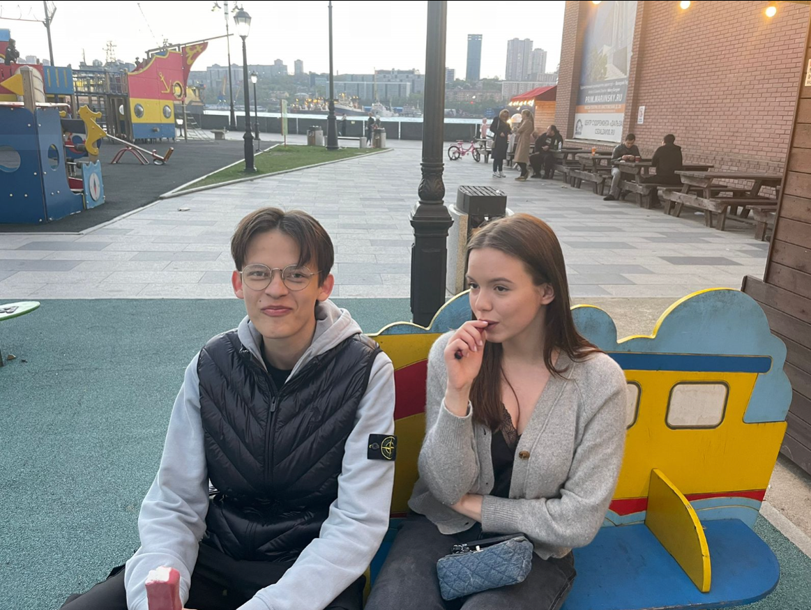
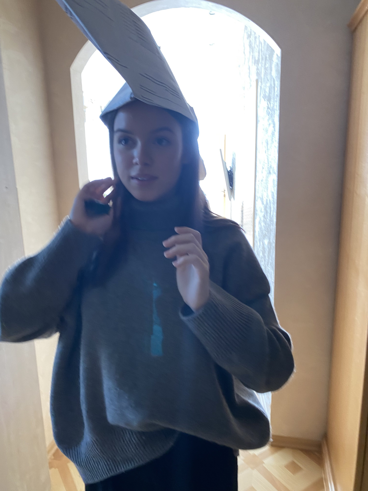
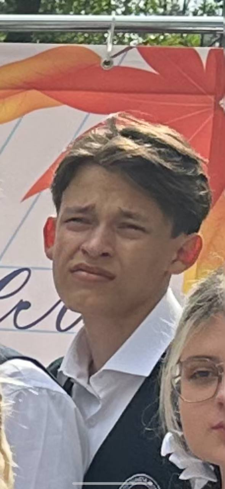

История Девченки из 11"Б" в Школе№13
История#1

Главная героиня "Анастасия Степанченко" в главном романе "Неопределенность"
(слева какой-то лох)

Наша Героиня уже готова к рассказу, приступаем!
Роман "Неопределенность"
ОСНОВАНО НА РЕАЛЬНЫХ СОБЫТИЯХ
В школе номер 13 жила загадочная личность под именем Настя.
Она была очень разбалованной и вела разгульный образ жизни.
Ее отправили во Владивосток из "Америки", со стартовым набором, в который входили такие вещи как, особняк, обгрызанный телефон без симки, измученный кот по имени Ричи, которого она марила голодом.
Пришла она в класс и налетел на нее, паназиатский воин Дмитрий-сосун*. Весь 9 класс он тягал бедную, потрепанную девочку. Но вот исполнилось 18 лет, и тут же невинная Настя, превратилась в ужасную путану.
На горизонте появился Рыцарь-матвей, красивый кучерявый воин (не то, что этот интернационал). Он приручил путану, и постепенно, Настя начала возвращаться на путь чести.
Дмитрий-сосун в то время, продумывал гениальный, по его мнению "план-пикник". Через достойного рыцаря, он начал перетягивать зверушку себе. Рыцарь боролся, но в какой то момент, его гордая честность подвела.
Но тут прошло школьное время, и Путана-Настасья улетела отдыхать, уважаемый темный сосун, продолжал попытки контакта с целью. Но кучерявый, доблестный Матвей, пытался обезопасить невинную прицессу.
В один момент Анастасья препутанная, перешла на темную сторону. Воин ничего не смог с этим поделать, и опустил руки (доблестно). Шли летние, теплые дни, Матвей уже и позабыл о злодеях, но тут, принцесса-мерикано, шлет телеграмму, в которой, пишет, как она каится в своих поступках и хочет перейти на светлую сторону.
Видел свет Матвей в конце тунелля, но не долго длилось счастье. Ведь Настя, как распутная путана, после начала учений, предала великого и ушла, к лего-злодею. Через пол месяца, она выходит на разговор, с союзником Матвея, Захаром Стоникславовичем. Он решил послушать бред девчачий. Вскоре гонец оповестил о намериниях Анастасии-распутной, и Матвей, как честный, добрый, широкой-души человек, решил дать шанс, унизившемуся перед ним людишкой. Но вскоре Дмитрий Азиатский Дровосекич aka сосун aka любитель пофоткать жопы одноклассниц aka любитель поиграть в лего в 17 лет aka мистер длинноухий, уводит принцессу обманом из рук прекрасного Матвея. И так было еще 3 раза.
В конце концов точкой невозврата-разврата стало то, как проезжая с воинами на кабанной скачке, Матвей Мощнославовиыч, и его два друга Игорь Бреттпитович AKA харламов и Захар Короткострижыч застали Дмитрия-злодея-колдуна и Настю-портовую развратницу в близости, у подножья скалы великой, название которой слышал каждый поселенец Царства 13 МБОУ СОШ, САН-РЕМО.
После этой новости, Князь Матвей-закрученный волос, и его дружина казаков, пришли в отчяаяние.
Земля русская, никогда не забудет подвигов Матвея-премудрого, и они будут занесены в специальную книгу, под названием "13 мгновений чести".

Спасибо нашему актерскому составу за участие!
Дисклэмер: История, наверное, вымысел, а может или нет, кто знает, может Дима? Не воспринимайте всерьез! Удачи на уроках!
P.S: Меня заставили